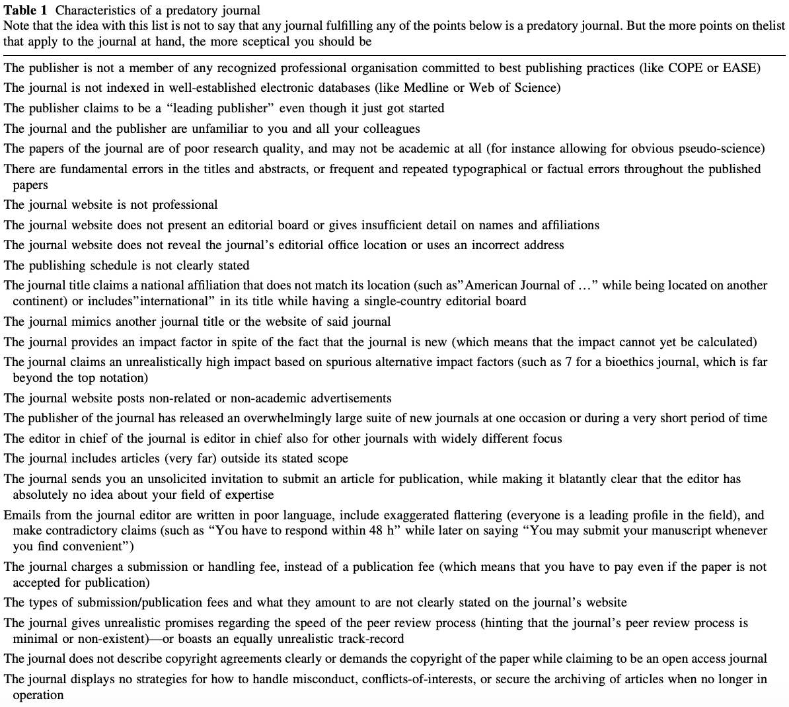
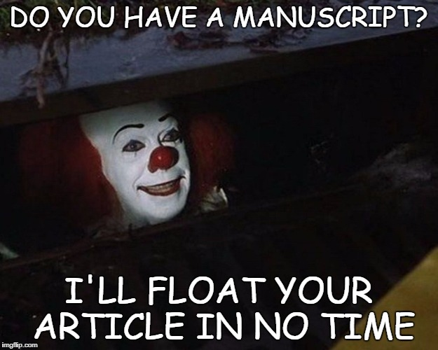
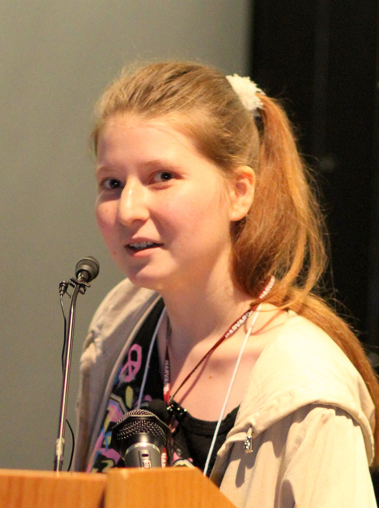

This post examines the problems with modern-day science and academia as a whole.
an exploitive academic publishing business model that involves charging publication fees to authors without checking articles for quality and legitimacy and without providing the other editorial and publishing services that legitimate academic journals provide, whether open access or not
In plain English, any Joe Schmoe can submit his revelatory paper that sets a new high score on the Crackpot Index to these journals—provided he can pay the author's fee (which doesn't guarantee publication) and fill out the forms—and get accepted. The quality of science is of no matter, the money is.
Another definition is given in the Nature paper, Predatory journals: no definition, no defence :
Predatory journals and publishers are entities that prioritize self-interest at the expense of scholarship and are characterized by false or misleading information, deviation from best editorial and publication practices, a lack of transparency, and/or the use of aggressive and indiscriminate solicitation practices
The journal (read: predator) preys on the researcher who is desperate to get his paper published and another entry on his CV. This process can easily propagate and lead to worse science:
What makes a journal predatory? Some researchers and organizations have published typical characteristics of predatory journals.
Jeffrey Beall put out his own list in his short article Criteria for Determining Predatory Open-Access Publishers. Among these are obvious characteristics:
- The journal does not identify a formal editorial / review board.
- Evidence exists showing that the editor and/or review board members do not possess academic expertise to reasonably qualify them to be publication gatekeepers in the journal's field.
- Copy-proofs (locks) their PDFs, thus making it harder to check for plagiarism.
- The publisher dedicates insufficient resources to preventing and eliminating author misconduct, to the extent that the journal or journals suffer from repeated cases of plagiarism, self-plagiarism, image manipulation, and the like.
- Use boastful language claiming to be a "leading publisher" even though the publisher may only be a startup or a novice organization.
And non-obvious:
- There is little or no geographical diversity among the editorial board members, especially for journals that claim to be international in scope or coverage.
- The publisher asks the corresponding author for suggested reviewers and the publisher subsequently uses the suggested reviewers without sufficiently vetting their qualifications or authenticity. (This protocol also may allow authors to create faux online identities in order to review their own papers).
- Operate in a Western country chiefly for the purpose of functioning as a vanity press for scholars in a developing country (e.g., utilizing a maildrop address or PO box address in the United States, while actually operating from a developing country).
Another list was published by Eriksson and Helgesson in their 2016 paper The false academy: predatory publishing in science and bioethics. Their 25 characteristics is seen below:
Combining these two lists and removing the minor entries, the primary items are:
Note the comment on the table above: these characteristics alone don't immediately qualify a journal as predatory, although some characteristics are much more suspect than others.
The first incident was created by Alan Sokal, who submitted his paper Transgressing the Boundaries: Towards a Transformative Hermeneutics of Quantum Gravity, in which he argues that
It has thus become increasingly apparent that physical ``reality'', no less than social ``reality'', is at bottom a social and linguistic construct; that scientific ``knowledge", far from being objective, reflects and encodes the dominant ideologies and power relations of the culture that produced it; that the truth claims of science are inherently theory-laden and self-referential; and consequently, that the discourse of the scientific community, for all its undeniable value, cannot assert a privileged epistemological status with respect to counter-hegemonic narratives emanating from dissident or marginalized communities.
To a layperson (which seems to include the journal's editor, if he even looked at it), there is no telling that the paper is absolute nonsense: the grammar and terminology are complex and the science in which he speaks of is foreign to common ears.
Arguably the most famous incident regarding predatory journals is John Bohannon's work discussed in his paper, Who's Afraid of Peer Review? (Wikipedia). The papers submitted and data can be found here.
Bohannon submitted a bogus paper to "304 open-access publishers: 167 from the DOAJ, 121 from Beall’s list, and 16 that were listed by both", where the paper was designed using the following process:
Molecule X from lichen species Y inhibits the growth of cancer cell Z. To substitute for those variables, I created a database of molecules, lichens, and cancer cell lines and wrote a computer program to generate hundreds of unique papers. Other than those differences, the scientific content of each paper is identical.
The fictitious authors are affiliated with fictitious African institutions. I generated the authors, such as Ocorrafoo M. L. Cobange, by randomly permuting African first and last names harvested from online databases, and then randomly adding middle initials. For the affiliations, such as the Wassee Institute of Medicine, I randomly combined Swahili words and African names with generic institutional words and African capital cities.
The graph’s caption claims that it shows a “dose-dependent” effect on cell growth—the paper’s linchpin result—but the data clearly show the opposite. The molecule is tested across a staggering five orders of magnitude of concentrations, all the way down to picomolar levels. And yet, the effect on the cells is modest and identical at every concentration.
[In the second experiment,] the control cells were not exposed to any radiation at all. So the observed “interactive effect” is nothing more than the standard inhibition of cell growth by radiation. Indeed, it would be impossible to conclude anything from this experiment.
To ensure that the papers were both fatally fl awed and credible submissions, two independent groups of molecular biologists at Harvard University volunteered to be virtual peer reviewers...I translated the paper into French with Google Translate, and then translated the result back into English. After correcting the worst mistranslations, the result was a grammatically correct paper with the idiom of a non-native speaker...The researchers also helped me fine-tune the scientific flaws so that they were both obvious and “boringly bad.”
[In the closing statement, Bohannon (as Cobange) states that] “In the next step, we will prove that molecule X is effective against cancer in animal and human. We conclude that molecule X is a promising new drug for the combined-modality treatment of cancer.” If the scientific errors aren’t motivation enough to reject the paper, its apparent advocacy of bypassing clinical trials certainly should be.
The results were astonishing, but not really:
157 of the journals had accepted the paper and 98 had rejected it. Of the remaining 49 journals, 29 seem to be derelict: websites abandoned by their creators.
Of the 255 papers that underwent the entire editing process to acceptance or rejection, about 60% of the fi nal decisions occurred with no sign of peer review.
Of the 106 journals that discernibly performed any review, 70% ultimately accepted the paper. Most reviews focused exclusively on the paper’s layout, formatting, and language. This sting did not waste the time of many legitimate peer reviewers. Only 36 of the 304 submissions generated review comments recognizing any of the paper’s scientific problems. And 16 of those papers were accepted by the editors despite the damning reviews.
For the publishers on [Beall's] list that completed the review process, 82% accepted the paper.
About one-third of the journals targeted in this sting are based in India...making it the world’s largest base for open-access publishing; and among the India-based journals in my sample, 64 accepted the fatally fl awed papers and only 15 rejected it...The United States is the next largest base, with 29 acceptances and 26 rejections.
Journals published by Elsevier, Wolters Kluwer, and Sage all accepted my bogus paper.
Some journals were shut down and apologized for, while others rejected communication and are still operating today.
The other big incident (ongoing, rather) in predatory journal history is that of SCIgen (GitHub, website), a program created and developed by MIT researchers to "maximize amusement, rather than coherence" and "auto-generate submissions to conferences that you suspect might have very low submission standards".
As expected, this program is ripe for abuse by those who lack the intelligence and drive to perform their own novel research, but still want that sweet, sweet line on their CV and a talking point with women at bars. Like in 2014, more than 120 computer-generated papers were redacted from journals published by the powerhouses Institute of Electrical and Electronic Engineers (IEEE) and Springer. Soon thereafter, Springer collaborated with the French researcher who discovered the phony papers, Cyril Labbé, to create SciDetect (website), a program to detect computer-generated papers.
Predatory conferences are similar to journals, just in conference format. The SCIgen team brought these to light in 2005 with their paper Rooter: A Methodology for the Typical Unification of Access Points and Redundancy being accepted.
Despite this blog's lack of readership, it never hurts to name and shame these journals more than they already are, which will never be enough! It's important to note that not all of these journals are truly predatory.
One of the principle questions in the scientific community is "should knowledge be free?". After all, us taxpayers fund a lot of research through grants, so shouldn't we get to have access to the final results? This is what the open access movement is about: research being free and easily accessible to those who want to view it.
https://en.wikipedia.org/wiki/Open_access https://en.wikipedia.org/wiki/Copyright_policies_of_academic_publishers Publish or perish creates a dangerous cycle for science, its institutions, and its practitioners.
A typical assistant professor at a research-focused U.S. university is hired on tenure track with a review at 5-7 years. The review consists of committees at multiple levels (department, college, university) who examine their publications, teaching reviews, and other activities, with publications being a majority of the consideration. Despite what they tout, universities' primary focus is research and the money that comes with it, not teaching.
In an effort to improve their likelihood for achieving tenure, professors are indirectly encouraged to publish more. But because of human limitations, meaningful publications (at least in STEM fields) take many months, if not years, to fully complete—precious time that the professors just do not have available. But what if they changed up their methods just a bit to help themselves out? There are a few unethical practices some engage in to boost their publication record:
This behavior doesn't necessarily begin at the professor-level. To even be considered for a professorship, one's publication record needs to be outstanding, leading to the aforementioned unethical practices. There are hundreds of applicants gunning for a single professorship, meaning every publication and impact factor counts.
Pride is the other part of this problem. I've seen professors beam as they bragged to the class about their citation numbers and graduate students scowl when asked about the number of papers they've published. To an extent, it is a measure of how good of a researcher you are: if you put out multiple papers in one year that all get accepted to high impact factor journals, odds are you're a solid researcher. On the other hand, not putting out a single paper in a year or multiple doesn't necessarily mean you're worthless, as other factors could be playing a role.
A variant of the Matthew effect (rich get richer, poor get poorer) also exists in academia. Take two professors who are in the same field: one has tens to hundreds of papers and thousands of citations, while the other has a few tens of papers and a few hundred citations. Who is more likely to be seen by researchers on sites like Google Scholar? Whose name is more likely to be recognized? Who is more likely to be awarded a grant? The former by far. Their reliability and quality of work is proven by their track record. This makes it incredibly difficult for non-established researchers to "get big" in their field, as their papers rarely make it to the front page of search results. (Ben Trettel and I had a nice email exchange about this that can be found here.)
So, what is the solution to this? While I am completely in the dark about the review practices for tenure and hiring of assistant professors, it is important that the quality of their work is also taken into account. As a rather prominent scientist once told me, in order to perform an impactful cancer study, it would take 10+ years and hundreds of millions of dollars, both of which the funder and funded aren't patient enough for. Instead, work like this—quality science, patient with results—should be encouraged more often.
Further, the lack of patience and need for instant gratification in the form of results may point towards a fundamental misunderstanding of how science works. Science is not a straight path from inception to experiments to results. There are obstacles, steps (sometimes leaps) backwards, dead ends, misinterpretations, false negatives and positives, and a host of other issues that one may encounter on their way to the truth. Rushing through the process can—and often will—lead to poor or even false results.
One of the key tenets of science is its reproducibility. In order for an experiment's results to be legitimate, the experiment itself should be able to be reproduced elsewhere and produce identical, or at least similar, results. And yet, a large amount of studies aren't reproducible.
Before continuing, it's important to note that reproducible ≠ replicable. Plesser makes this clear in his Reproducibility vs. Replicability: A Brief History of a Confused Terminology by giving a few different definitions for each as coined by different organizations or individuals.
The Association for Computering Machinery (ACM) defines them as the following:
Reproducibility (Different team, different experimental setup): The measurement can be obtained with stated precision by a different team, a different measuring system, in a different location on multiple trials. For computational experiments, this means that an independent group can obtain the same result using artifacts which they develop completely independently.
Replicability (Different team, same experimental setup): The measurement can be obtained with stated precision by a different team using the same measurement procedure, the same measuring system, under the same operating conditions, in the same or a different location on multiple trials. For computational experiments, thismeans that an independent group can obtain the same result using the author’s own artifacts.
The American Statistical Society has also proposed definitions in their Recommendations to Funding Agencies for Supporting Reproducible Research:
Reproducibility: A study is reproducible if you can take the original data and the computer code used to analyze the data and reproduce all of the numerical findings from the study.
Replicability: This is the act of repeating an entire study, independently of the original investigator without the use of original data (but generally using the same methods).
While there are other definitions presented, they all boil down to the following: to reproduce is to obtain the same results and to replicate is to perform the experiment in the same manner.
So, how bad is the lack of reproducibility? Pretty bad. A few excerpts 2016 survey of 1,576 researchers sponsored by Nature (direct quotes are unbracketed, my words are bracketed):
[FINISH][90% said yes, there is a reproducibility crisis.]
[85/60% and 75/60% of chemistry and biology scientists, respectively, have failed at reproducing someone else's/their own experiment.]
More than 60% of respondents said that each of two factors — pressure to publish and selective reporting — always or often contributed. [This ties directly back to publish or perish.]